阅读词表
| 词条 | 拼音 | 类型 | 说明 |
|---|---|---|---|
| 上帝 | shàng dì | concept | 商周宗教中的最高神。 |
| 周昌 | zhōu chāng | person | 周文王姬昌。 |
| 殷都 | yīn dū | place | 商朝后期都城区域。 |
| 吕尚 | lǚ shàng | person | 姜太公名尚。 |
| 箕子 | jī zǐ | person | 商末贵族，明夷卦解释中的关键人物。 |
| 周原 | zhōu yuán | site_or_culture | 周族核心区域。 |
| 老牛坡 | lǎo niú pō | site_or_culture | 陕西西安商代遗址。 |
| 崇国 | chóng guó | place | 商周之际西土方国。 |
| 明夷 | míng yí | text | 《易经》卦名。 |
| 翦商 | jiǎn shāng | concept | 周人剪灭商朝的政治行动。 |
| 易经 | yì jīng | text | 文王卦爻辞体系。 |
| 西土 | xī tǔ | place | 周族所在的西方地区。 |
| 羌人 | qiāng rén | concept | 西方族群，常见于商代卜辞。 |
| 人牲 | rén shēng | concept | 被杀用于祭祀的人。 |
| 邘 | yú | place | 古国名，在今河南沁阳附近。 |
| 周文王 | zhōu wén wáng | person | 周族领袖姬昌。 |
| 人祭 | rén jì | concept | 杀人用于祭祀。 |
| 麀 | yōu | rare_word | 母鹿。 |
| 翯 | hè | rare_word | 羽毛洁白而有光泽。 |
| 卦爻辞 | guà yáo cí | concept | 《易经》中卦辞和爻辞的合称。 |
| 羑里 | yǒu lǐ | place | 商代囚禁周文王之地。 |
| 髳 | máo | rare_word | 古代西南部族名，牧誓八国之一。 |
| 咷 | táo | rare_word | 大声哭；号咷。 |
| 箧 | qiè | rare_word | 小箱子，繁体作“篋”。 |
| 槃 | pán | rare_word | 用于人名“陈槃”。 |
| 方伯 | fāng bó | concept | 受命统领一方的首领。 |
| 后冈H10 | hòu gāng H10 | 项目词典 | 殷墟后冈圆形祭祀坑编号，文中复原其献祭过程。 |
| 六十四卦 | liù shí sì guà | 项目词典 | 由上下两个八卦重叠形成的六十四种六爻卦象。 |
| 刘家庄北 | liú jiā zhuāng běi | 项目词典 | 殷墟南部商人聚落和制陶区。 |
| 宗教改革 | zōng jiào gǎi gé | 项目词典 | 文中指试图以埋藏器物替代杀人杀牲的祭祀变革。 |
| 文王大宅 | wén wáng dà zhái | 项目词典 | 周原遗址中的大型西周建筑基址。 |
| 甲骨卜辞 | jiǎ gǔ bǔ cí | 项目词典 | 商代刻写在甲骨上的占卜文字。 | 刻写在龟甲兽骨上的占卜文字。 | 刻写在甲骨上的占卜记录。 | 刻写在龟甲兽骨上的占卜辞句。 |
| 腰坑殉狗 | yāo kēng xùn gǒu | 项目词典 | 在墓穴腰坑中埋狗的丧葬习俗。 | 墓穴腰部小坑中埋狗的商人葬俗。 |
| 郑州商城 | zhèng zhōu shāng chéng | 项目词典 | 商代早期大型城址。 |
| 青铜礼器 | qīng tóng lǐ qì | 项目词典 | 用于礼仪或祭祀的青铜器。 |
| 东南夷 | dōng nán yí | 项目词典 | 商朝东南方向诸夷族群。 |
| 二层台 | èr céng tái | 项目词典 | 墓室内用于放置随葬品或殉人的台阶状结构。 |
| 伯邑考 | bó yì kǎo | 项目词典 | 文王长子。 |
| 周武王 | zhōu wǔ wáng | 项目词典 | 周发，灭商之君。 |
| 宫殿区 | gōng diàn qū | 项目词典 | 都邑中宫殿和王室活动集中的区域。 |
| 祭祀坑 | jì sì kēng | 项目词典 | 用于举行祭祀或埋入祭品的坑穴。 | 考古遗址中用于掩埋祭品或举行祭祀的坑穴。 | 用于祭祀或埋藏祭品的坑穴。 | 用于祭祀埋牲或埋人的坑穴。 | 考古遗址中用于祭祀、掩埋祭品或尸骨的坑穴。 |
| 肩胛骨 | jiān jiǎ gǔ | 项目词典 | 肩部骨骼，古代常用于占卜。 | 动物或人的肩部骨骼，常被加工为卜骨。 |
| 逸周书 | yì zhōu shū | 项目词典 | 传世古书，保存若干周代相关材料。 | 保存周初传说和文献材料的古书。 | 保存周代逸篇和历史材料的古书。 |
| 铜礼器 | tóng lǐ qì | 项目词典 | 用于礼仪或祭祀的青铜器。 |
| 世俘 | shì fú | 项目词典 | 《逸周书》篇名，记周初俘获和献俘。 |
| 中人 | 项目词典 | 宦官。 | |
| 中孚 | zhōng fú | 项目词典 | 《易经》卦名，文中列为自身对称的卦。 |
| 亶父 | dǎn fǔ | 项目词典 | 古公亶父；周族迁居周原时的首领。 |
| 仡仡 | yì yì | 项目词典 | 勇猛强健的样子；文中出自《诗经·皇矣》。 |
| 俯身 | fǔ shēn | 项目词典 | 身体向前伏下。 |
| 分封 | fēn fēng | 项目词典 | 周初封邦建国制度。 |
| 卜辞 | bǔ cí | 项目词典 | 甲骨占卜后刻写或记录的辞句。 | 甲骨上记录占卜的文字。 | 占卜时刻写或记录的辞句。 |
| 卦象 | guà xiàng | 项目词典 | 由阴阳爻组成的卦形图象。 |
| 卦辞 | guà cí | 项目词典 | 解释一卦吉凶和意义的文字。 |
| 号咷 | háo táo | 项目词典 | 大声哭号。 |
| 合文 | hé wén | 项目词典 | 两个或多个字合写成一个字形。 |
| 同人 | tóng rén | 项目词典 | 《易经》卦名，文中解释为集结盟军。 |
| 后稷 | hòu jì | 项目词典 | 周族始祖传说中的农业神和祖先。 |
| 周公 | zhōu gōng | 项目词典 | 周公旦，武王之弟。 | 周公旦，周初政治家。 |
| 商族 | shāng zú | 项目词典 | 商王朝建立前后的族群共同体。 |
| 商王 | shāng wáng | 项目词典 | 商朝王。 |
| 土著 | tǔ zhù | 项目词典 | 本地原有居民或族群。 |
| 基址 | jī zhǐ | 项目词典 | 建筑物遗留下来的基础位置。 |
| 填土 | tián tǔ | 项目词典 | 填入坑穴或遗迹中的土层。 |
| 大畜 | dà xù | 项目词典 | 《易经》卦名，文中与无妄成对举例。 |
| 太公 | tài gōng | 项目词典 | 姜太公吕尚。 |
| 夯土 | hāng tǔ | 项目词典 | 把土层层夯实形成建筑基础或城墙的技术。 |
| 始祖 | shǐ zǔ | 项目词典 | 一个族群传说中的最早祖先。 |
| 姜嫄 | jiāng yuán | 项目词典 | 周族始祖传说中的女性始祖。 | 周人始祖母，传说为有邰氏之女、后稷之母。 |
| 孔子 | kǒng zǐ | 项目词典 | 春秋时期思想家、教育家，儒家学派的重要奠基者。 |
| 小过 | xiǎo guò | 项目词典 | 《易经》卦名，文中列为自身对称的卦。 |
| 尚书 | shàng shū | 项目词典 | 儒家经典之一，文中引用《盘庚》篇。 | 保存上古政治文献和诰命的儒家经典。 |
| 左传 | zuǒ zhuàn | 项目词典 | 春秋史传文献。 |
| 巫术 | wū shù | 项目词典 | 古代借助神秘仪式影响现实的信仰行为。 | 借助神秘仪式影响现实的信仰行为。 |
| 帝辛 | dì xīn | 项目词典 | 商纣王的王名。 |
| 征伐 | zhēng fá | 项目词典 | 出兵讨伐。 |
| 成王 | chéng wáng | 项目词典 | 周成王，武王之子。 |
| 战俘 | zhàn fú | 项目词典 | 战争中捕获的人。 |
| 捆绑 | kǔn bǎng | 项目词典 | 用绳索等束缚身体。 |
| 族徽 | zú huī | 项目词典 | 族群标识，常见于商周青铜器铭文。 |
| 春秋 | chūn qiū | 项目词典 | 孔子时代相关的编年史经典。 |
| 朱砂 | zhū shā | 项目词典 | 红色矿物，古代葬俗中常用于铺垫或涂抹。 | 红色矿物颜料，古代常用于礼仪。 | 红色矿物颜料，常见于礼仪和墓葬。 | 红色矿物颜料，古代常用于礼仪和葬俗。 |
| 杂糅 | zá róu | 项目词典 | 混杂融合在一起。 |
| 武王 | wǔ wáng | 项目词典 | 周武王。 |
| 殉人 | xùn rén | 项目词典 | 陪葬或随葬的人。 |
| 殉葬 | xùn zàng | 项目词典 | 以人或物随葬。 |
| 殷商 | yīn shāng | 项目词典 | 商朝后期文化和政权。 | 商代后期以殷墟为中心的商王朝阶段。 |
| 殷墟 | yīn xū | 项目词典 | 晚商都邑遗址，甲骨卜辞的重要出土地。 | 商代晚期都城遗址。 |
| 灰坑 | huī kēng | 项目词典 | 考古遗迹中常见的垃圾坑或废弃坑。 | 遗址中含灰土、废弃物或祭祀遗存的坑穴。 |
| 爻辞 | yáo cí | 项目词典 | 解释每一爻吉凶和意义的文字。 |
| 献祭 | xiàn jì | 项目词典 | 把祭品奉献给神灵或祖先。 | 向神灵、祖先等奉献祭品。 |
| 玄鸟 | xuán niǎo | 项目词典 | 商族起源神话中的神鸟或天命媒介。 |
| 玉戈 | yù gē | 项目词典 | 玉制戈，多为礼仪性器物。 |
| 玉璜 | yù huáng | 项目词典 | 半璧形玉器。 |
| 王亥 | wáng hài | 项目词典 | 先商重要首领，文献中与牧牛、有易事件相关。 | 商族先公，文中作为“高祖”的可能所指。 |
| 盆骨 | pén gǔ | 项目词典 | 骨盆，文中作“零碎盆骨”。 |
| 碳化 | tàn huà | 项目词典 | 有机物受热或长期埋藏后变成含碳状态。 |
| 神权 | shén quán | 项目词典 | 以神灵、祭祀权威支撑的统治权力。 | 以神灵或宗教权威支配社会政治生活的权力形态。 |
| 稽首 | qǐ shǒu | 项目词典 | 古代跪拜礼。 |
| 窖穴 | jiào xué | 项目词典 | 地下储藏坑穴。 |
| 箭镶 | jiàn xiāng | 项目词典 | 文中指箭头一类器物；此处保留原文写法。 |
| 繁衍 | fán yǎn | 项目词典 | 逐渐增多、传续后代。 |
| 纣王 | zhòu wáng | 项目词典 | 商朝末代王帝辛。 | 商末王，文中讨论其暴虐和人祭。 |
| 肋骨 | lèi gǔ | 项目词典 | 胸部骨骼。 |
| 股骨 | gǔ gǔ | 项目词典 | 大腿骨。 |
| 肢解 | zhī jiě | 项目词典 | 将肢体切割分解。 |
| 肱骨 | gōng gǔ | 项目词典 | 上臂骨。 |
| 胫骨 | jìng gǔ | 项目词典 | 小腿内侧长骨。 |
| 舟筏 | zhōu fá | 项目词典 | 船和筏一类水上交通工具。 |
| 虞芮 | yú ruì | 项目词典 | 周代虞、芮两个诸侯国的合称。 |
| 蛮荒 | mán huāng | 项目词典 | 荒远未开发。 |
| 蜚廉 | fēi lián | 项目词典 | 秦、赵共同先祖，传说善于奔走。 | 商末人物，恶来与季胜之父。 |
| 蜷身 | quán shēn | 项目词典 | 身体蜷缩的姿势。 |
| 诅咒 | zǔ zhòu | 项目词典 | 以宗教方式祈求灾祸降临敌方。 |
| 诗经 | shī jīng | 项目词典 | 中国古代诗歌总集，儒家经典之一。 |
| 诠释 | quán shì | 项目词典 | 解释并阐明意义。 |
| 贡赋 | gòng fù | 项目词典 | 向统治者进贡或缴纳的赋税。 |
| 迁徙 | qiān xǐ | 项目词典 | 群体从一地迁移到另一地。 |
| 野史 | 项目词典 | 私家编撰的史书。有别于官修的“正史”而言。 | |
| 铜戈 | tóng gē | 项目词典 | 青铜戈，古代横刃长柄兵器。 | 青铜戈，商周常见兵器。 |
| 铜爵 | tóng jué | 项目词典 | 青铜酒器爵。 | 青铜爵，古代酒器。 |
| 铭文 | míng wén | 项目词典 | 铸刻在青铜器等器物上的文字。 | 器物上铸刻或刻写的文字。 |
| 镐京 | hào jīng | 项目词典 | 西周都城。 |
| 韩厥 | hán jué | 项目词典 | 晋臣，保护赵氏孤儿并助赵武复立。 |
| 鼎铭 | dǐng míng | 项目词典 | 铸刻在鼎上的铭文。 |
青铜器词表
| 器名 | 拼音 | 类型 | 说明 |
|---|---|---|---|
| 戈 | gē | bronze_item | 古代横刃长柄兵器。 |
| 爵 | jué | bronze_item | 古代酒器，也引申为爵位。 |
章节导读札记
| 主题 | 札记 | 操作 |
|---|---|---|
| 暂无章节导读札记 | ||
用户札记
| 类型 | 页 | 内容 |
|---|---|---|
| 暂无用户札记 | ||
原书阅读器页 465原书物理 PDF 页 463印刷页 451
第二十四章西土之人
献祭伯邑考后，纣王恩准周氏父子返回周邦，继续在西土为商朝效力。而返回周原后，周昌很快宣布“受命”（接受了上帝的命令），这意味着他成为上帝授权的人间王者，而使命正是灭亡商朝。就是从这时开始，他成了人们习惯称呼的“周文王”。
周原遗址的文王大宅和殷墟遗址的宫殿区分别是周人和商人领袖的住宅，两者规模差别巨大，是双方实力对比的直接体现。从当时的形势看，周族灭商的计划近乎异想天开。
那么，历时数百年的庞大商王朝，何以在周昌受命称王的十余年后就灰飞烟灭？
文王周昌和武王周发的翦商事业，属于中国古史进入“信史”时代的开端，很多大事件由此能够按年度排出顺序。但是，若要再现商周更迭的具体过程，还是发现史书充满很多的缺环及难以解释之处。
《史记》里的夏商往事，大多叙事过于程式化，或者说，其中的古代圣王往往言行幼稚，不近实情，如同写给儿童的启蒙故事。战国诗人屈原也深感古史中的经典叙事难以让人置信，所以他才在《天问》中抛出一连串质疑。
羌人盟军与太公阴谋
伯邑考死后，文王次子周发成了族长之位的继承人。他要执行父亲规划的翦商事业，而吕尚的作用不可替代，周族需要借助吕尚重新建立和西土羌人的传统盟友关系。
但吕尚如何离开殷都、返回西土是个难题。战国秦汉间的文献说，太公吕尚曾经“屠牛朝歌”，又曾经在黄河边的孟津（或者棘津）贩卖饭食，充当旅店杂工。这反映的可能是吕尚潜行返回西土的行程。我们不知道此行他有没有带儿子，但肯定带上了女儿邑姜。最后，吕尚垂钓渭水遇到文王，是旅程的结束。周人需要隐瞒吕尚来自殷都的事实，必须给他制造一个更安全的来历。这可能是垂钓故事的由来。
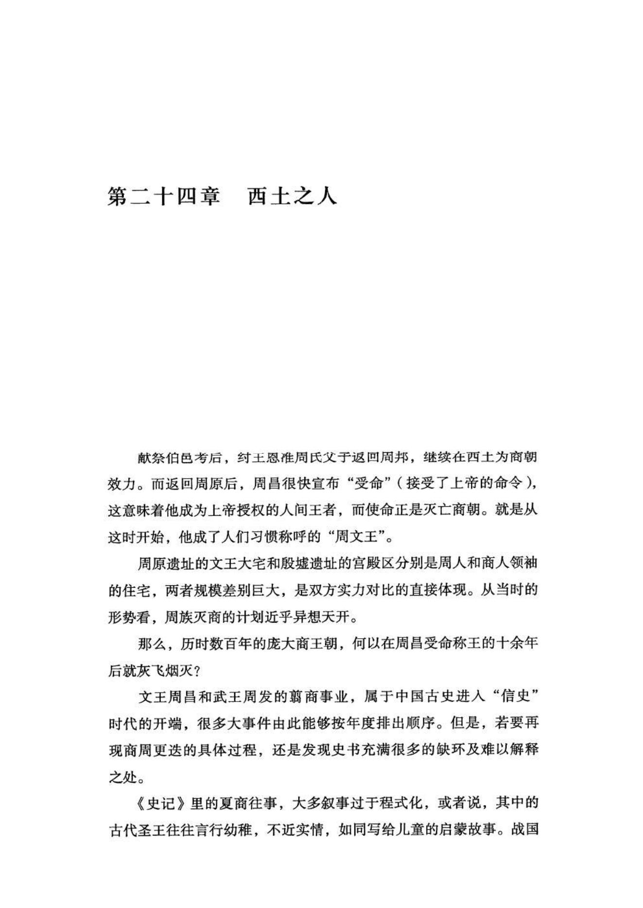
原书阅读器页 466原书物理 PDF 页 464印刷页 452
在文王的翦商事业中，吕尚加盟最晚，却是最重要的智囊谋士。《史记•齐太公世家》说，吕尚给文王提供的主要是用兵的权谋和从内部颠覆商朝的分化瓦解之策。
周西伯昌之脱羑里归，与吕尚阴谋修德以倾商政，其事多兵权与奇计。故后世之言兵及周之阴权，皆宗太公为本谋。
这些计谋过于隐秘，不会被载入史书，但吕尚的阴谋家和战略家形象却由此定型。后世战国秦汉间出现的一些兵书，如《六韬》《阴符经》 《太公兵法》等，都把作者署名为吕尚。
这可能和吕尚作为殷都贱民的生活经历有关。殷墟花园庄南大骨坑一带的发掘表明，屠宰场村的贱民部落也有自己的武装，当商王发动对外征伐时，村里的男丁可能也会参与。他们不会放过任何劫掠财富的机会，而且行军作战中也少不了执行他们本职的屠宰工作。所以，吕尚有机会见识商朝军队的征集、编练和实战。周族人只打过部落级别的猎俘战争，最需要的就是大规模部队的正规战争经验。
作为殷都屠宰场村的贱民，吕尚有自己的方式来了解商朝宫廷动向。宫廷占卜师用的牛肩胛骨来自屠宰场，他们或者自己去屠宰场拣选最合适的骨料，或者由屠宰场村的内行人拣选后送来。这正是吕尚接触宫廷占卜师圈子的难得机会，哪怕占卜师的学徒或家奴也有不可替代的作用。而且，凡商王的机要事务皆需要占卜师参与决策，由此，吕尚可以获悉殷都宫廷中的诸多秘闻。相比而言，一般的外地诸侯都未必有如此高效的信息源。
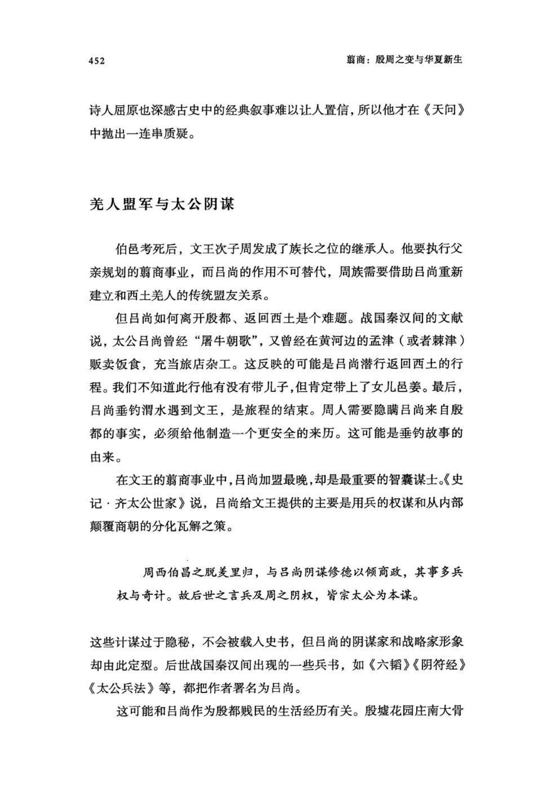
原书阅读器页 467原书物理 PDF 页 465印刷页 453
文王给吕尚的官职是“师”（教导者），这可能模仿自商朝。《帝王世纪》记载：“箕子为父师。”即纣王宫廷里的“父师”是箕子，“父”可能代表他是纣王的叔父辈。[[fn:1]]
尤其，吕尚和文王又是亲家，女儿邑姜现在是武王周发的夫人，对于商周更替来说，这桩婚姻意义重大。也正因此，周人对此事的沉默就更值得玩味。
在周人的史诗中，亶父、季历和文王三代的夫人（大姜、大任、大姒）都得到了歌颂，但武王的夫人邑姜却默默无闻。不仅《诗经》，周人的其他文献也几乎没有留下这位夫人的任何记录。但一些青铜礼器铭文却记载着这位王夫人在西周初建时的功勋。[[fn:2]]
可能是因为吕尚一言难尽的来历，以及邑姜曾经更换过丈夫，再加上伯邑考在殷都的死因一直是周昌家族的隐痛，所以在文献中，邑姜王后只能被隐藏于幕后。但在当时，周邦和吕尚家族的联姻意义重大，正是借助它，周人才得以重建和各羌人部落的关系。自亶父迁居周原，周和羌人（姜姓戎人）为敌已经超过半个世纪，因此，只有把商朝作为共同敌人，才能实现西土势力的再度联合。
吕尚出自羌人中的吕氏部族（居住地点不详），在其加盟周邦后，吕氏部族成为周人的忠实盟军，甚至吕氏首领也开始称王。西土之人正逐渐梦想灭亡商朝后的世界。[[fn:3]]
羌人主要生活在山地，崇拜山岳之神，有材料显示，吕氏部落的神山是晋南的霍太山。[[fn:4]] 但在晚商阶段，一个商人侯国（遗址在今山西灵石县旌介村以西）却出现在霍太山南方不远处，因此，很可能就是这个侯国驱逐了周边的吕氏部族，迫使他们迁居到了陕北。在羌人的语言里，神灵所居之山是“太”（泰）山。周灭商后，不仅吕尚被分封到山东地区的齐国，吕氏部族的其他首领还有被分封到河南南阳地区的，如申国和吕国（也称为甫国），而这些吕氏诸侯国也把山岳崇拜带到了新的封地，比如，山东的泰山或许正因此得名。
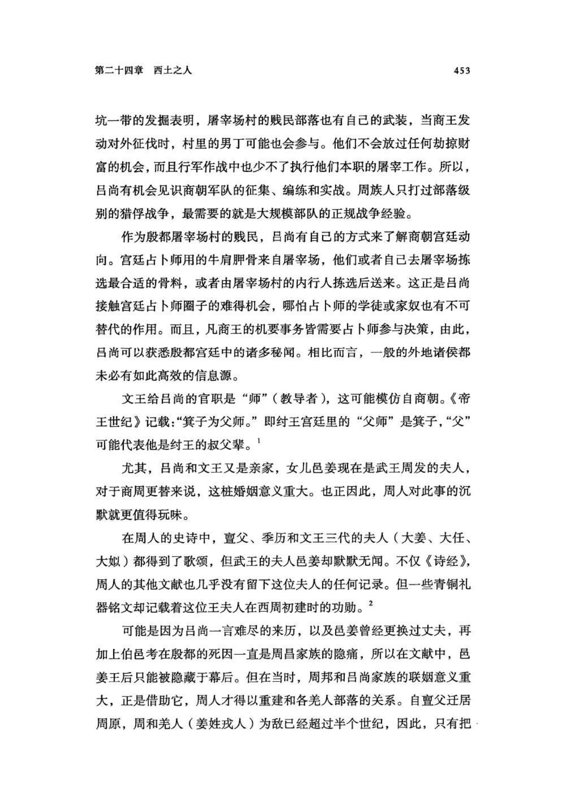
原书阅读器页 468原书物理 PDF 页 466印刷页 454
投身上帝信仰
要实现翦商事业，除了世俗意义的“富国强兵”，周昌还需要解决宗教理论上的难题。商王朝一直给上帝和诸神献祭，历代商王也都在上帝身边主持人间事务，周族的翦商事业还能得到诸神的支持吗？
这种“迷信”性质的问题可能不会困扰后世之人，但商代的人却大都笃信诸神的威力，更何况周昌还热衷研究通神和预测之术，就更不可能忽视神界的存在。对此，他必须做出合理的解释。
在周原“文王大宅”窖穴的甲骨上，文王曾经记录商人祭祀先王的仪式，但从传世的周人史诗来看，他并未把历代商王放在重要位置。文王最推崇的是商人的至高神，也就是上帝——他最先把商人的上帝概念引入了周族，认为是独一无二的上帝主宰着尘世间，而商人信奉的先王、龙凤和风雨等诸神并没有进入文王的崇拜体系。
帝乙和帝辛（纣王）两代商王曾革新商族传统宗教，把先王甚至自己抬升到“帝”的地位。对此，周昌持完全否定的态度。在他的观念中，上帝高居天界，和尘世中人，哪怕是商朝先王或周族先公都不能有丝毫混淆。[[fn:5]]
从这个维度说，周昌更像是推行了一场比较彻底的“一神教”改革。[[fn:6]]
不过，在碾子坡时代，周人已经接纳少量商人流亡者，也有过只掩埋铜器而不杀牲的祭祀现场。或许，在郑州商城晚期，商人中的部分“不杀生”宗教改革者就已经进入周族，并把改良过的上帝理念一并带了过来。但上古往事过于茫味，在传世文献里，最具决定意义的还是文王周昌。
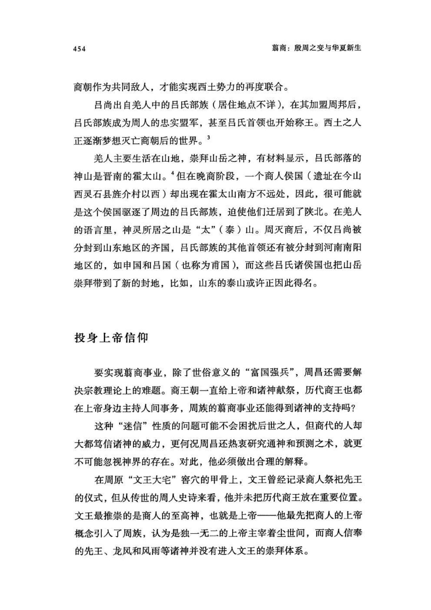
原书阅读器页 469原书物理 PDF 页 467印刷页 455
前述史诗《诗经•大雅•荡》一开头先是颂扬上帝的威严和崇高，说他是人间主宰，随后，便是已在上帝护佑之下的文王对商朝的控诉和诅咒。
周人的这种史诗，不只这一首。《诗经•大雅•皇矣》也记载了周昌改造过的上帝：
皇矣上帝，临下有赫。监观四方，求民之莫。维此二国，其政不获。维彼四国，爰究爰度。上帝耆之，憎其式廓。乃眷西顾，此维与宅。
在这里，上帝是一位居住在天界且富有人格特征的神灵，当周人还居住在豳地一碾子坡时，他就已经从天上俯瞰大地，观察各国的民风政情：有些国度（商朝）秩序混乱，这让他感到厌恶；但他把头转向西方，看到古公亶父领导的恭谨的周族人，便决定对其施加保佑，让周人获得一块福地（周原）。
上帝还曾经专门照顾过姜嫄、后稷、亶父、季历，[[fn:7]] 但和他关系最深、交往最直接的，只有文王周昌。在《皇矣》里，上帝曾经多次当面教诲周昌（“帝谓文王”）：“不要背叛我的援助，不要羡慕我施与别人的恩惠，（只要你一心虔诚）就能先上岸……
帝谓文王：无然畔援，无然歆羡，诞先登于岸。
“我对世间万象看得一清二楚，都会给与相应的结果，只是我不会大声宣扬出来而已；就像当年，我不会助长夏朝的混乱，让商朝取代了它。你不要用心揣摩我的想法，就是顺应了我的准则
帝谓文王：予怀明德，不大声以色，不长夏以革。不识不知，顺帝之则。
简言之，《皇矣》描述的上帝，崇高而孤独，只有文王能够与他沟通，获得他的指示。
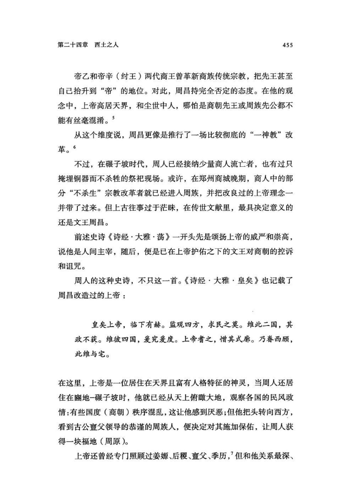
原书阅读器页 470原书物理 PDF 页 468印刷页 456
经过文王的这次“宗教革新”，周人这才用“上帝”这个外来的新神改造了自己的历史：从姜嫄的怀孕，直到最近的两代首领亶父和季历。而这些传说被正式写成文字，应当是在西周建立之后了。
对于当时粗陋无文的周族人，也只有神灵才能让他们敬畏和服从，进而投身到翦商这桩危险性极高、成功率极低的事业。来自强大商王朝的新神灵，显然更容易让西土之人产生敬畏感。重要的是，周昌还垄断了对上帝的解释权，只有他能见到上帝，面聆上帝的神谕。这上帝代言人的角色也让周昌有了神性，而唯有如此，在这趟翦商的冒险旅途中，周族人才能有足够的信心。
周昌重新阐释上帝还有一个好处：这是商族的古老信仰，也利于在商人内部找到共鸣，获取商人贵族的好感。帝乙和纣王两代商王以“帝”自居，唯我独尊，侵害了很多商人贵族和宗室的利益，加上纣王又经常杀戮贵族献祭，使得商朝高层人人自危。
周昌对上帝的很多认知，很可能就来自他在殷都期间与商人上层圈子的交往，特别是箕子。这些人的观念和纣王有很大的不同。据《史记》记载，周灭商后，箕子曾向武王周发谈论过上帝的世间秩序，和文王的阐释颇为相近。[[fn:8]]
周昌能够把商人的上帝观念引进周族，可能还借助了某些周人传统的神灵观念。比如，对“天”的崇拜。天很直观，它高高在上，是神灵之所居，很多早期族民都有对天神的崇拜和祭祀。因此，在周昌将商人的上帝概念引入周族之后，在他们的史诗和领袖的讲话里，上帝和“天”成了可以互相替换的概念：上帝是天，天也是上帝；上帝的命令是“天命”，上帝的关注就是“天监”。
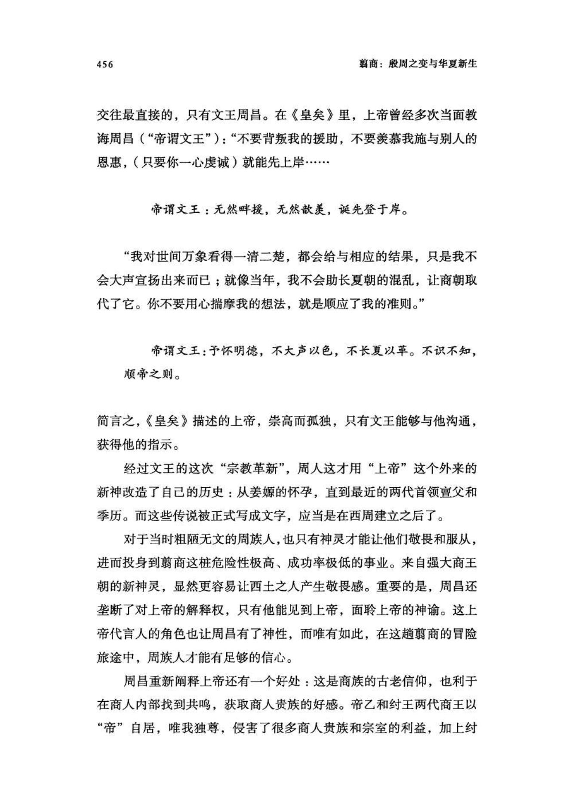
原书阅读器页 471原书物理 PDF 页 469印刷页 457
从殷都归来后不久，周昌就首次面聆上帝并接受上帝的命令，史称“受命”。这和他称王是同一件事，标志着周族和商朝分庭抗礼的竞争正式开启。当然，最开始很可能还只是局限在极少数知情人范围内。毕竟，周族还没有和商朝公然决裂的实力，表面上，周昌还要恪尽作为商朝附庸方伯的义务，需要缴纳的俘虏也还要定期送往殷都。
在称王的同时，周昌给自己定了“文王”的尊号。用文和武作为王的称号，也是从商朝模仿而来。[[fn:9]]
在《圣经・旧约》里，以色列长老摩西带领族人逃出埃及之后，多次获得犹太教上帝的当面指示，使以色列成为上帝的立约之民，把族人带往上帝的应许之地。文王周昌自殷都返回之后，则把商人的上帝阐释成普世的上帝，从而使自己成为上帝在周族和人间的代言人。
这两位通神者都改变了各自的文明；所不同的是，摩西是把上帝和特定族群绑定，文王则是解除上帝和特定族群的绑定。
《易经》的翦商谋略
即便有了上帝的应许，文王也还是必须处置翦商事业的诸多细节。《易经》里，藏有一些他的斟酌和计划。
其一，从周原去往殷都，必须渡过黄河，这对未来的远征军是个重大考验。
在周人活动区，最大的河流是渭河，他们虽曾在其上“造舟为梁”（用船架设浮桥），但黄河的水量更大，也更宽，造设浮桥并不现实。《易经》六十四卦中有十卦的卦爻辞出现“利涉大川”或“不利涉大川”，可见文王一直在研究渡河的时机与方法。[[fn:10]] 最后两卦即济和未济的爻辞中还有“曳其轮”的描述，说的就是马车渡河的场景。而这很可能来源于商人的经验。
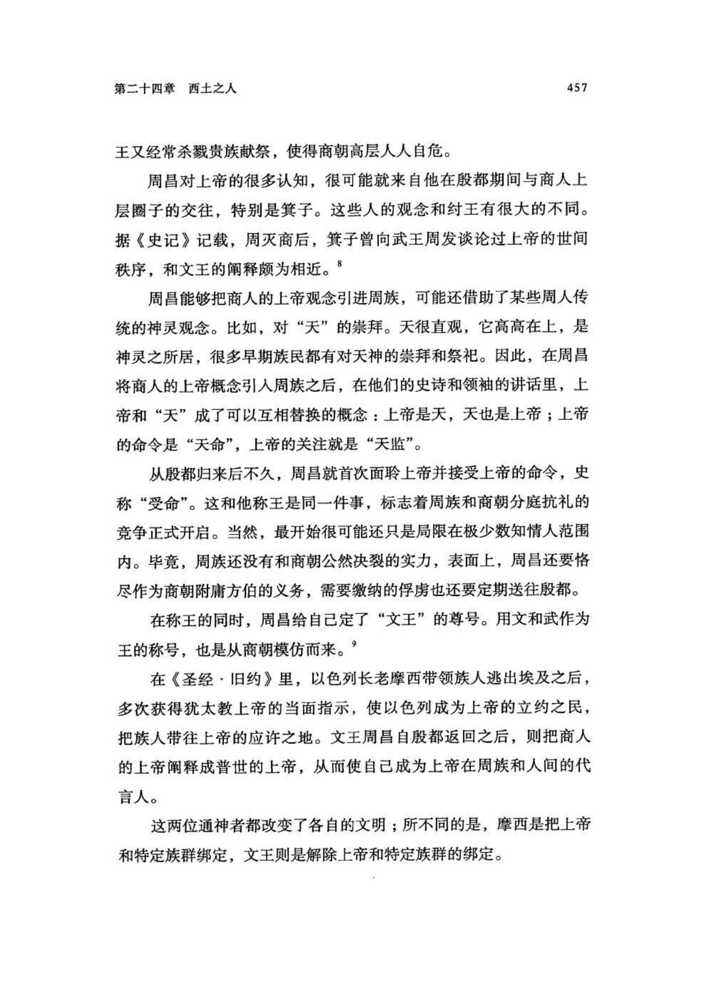
原书阅读器页 472原书物理 PDF 页 470印刷页 458
文王曾经往返于周原和殷都，也曾追随纣王的军队出征南土，应当见过商人军队渡黄河的景象。当时的船还比较小，难以运输马车，所以，即济卦初九爻辞中的“曳其轮”可能是指：先把木材捆绑在车上，然后把马匹拴在后面，让马车像木筏一样漂渡过河；而“濡其尾”说的是车马渡河和马尾浸泡在水里的场景。即济卦的上六爻和未济卦的上九爻还有“濡其首”的描述，应该说的也是马在渡河。
除了用舟筏或涉水渡河，文王可能还考虑过另一种可能性：趁冬季黄河结冰时过河。坤卦初六爻曰：“履霜，坚冰至。”但在文王的时代，气候还比较湿热，黄河下游河段不太可能会结冰，即便有结冰，怕是也难以承受人马。因此，文王还曾考虑取道陕北，迈过结冰的黄河，然后穿越山西，远征殷都。
其二，周族的规模很小，仅凭自身是无力对抗庞大的商王朝的，所以，它必须争取尽可能多的同盟军。
《易经》的蹇卦和解卦成对，内容皆与派使者联络西南的盟友有关。蹇卦的卦辞有“利西南，不利东北”，解卦的卦辞则有“利西南”。以周原为坐标，殷都在东北方，而西南方（今陕西汉中、甘肃陇西及四川地区）则有大量土著部族，是文王重点争取的目标。所以，坤卦的卦辞曰：“西南得朋，东北丧朋。”到后来周武王灭商时，盟军中确实有蜀、髳、微、卢、彭和濮等西南部族。
此外，关于东北和西南前途的比较，皆出现在上述三卦的卦辞而非爻辞中，说明这个问题在文王心中格外重要。
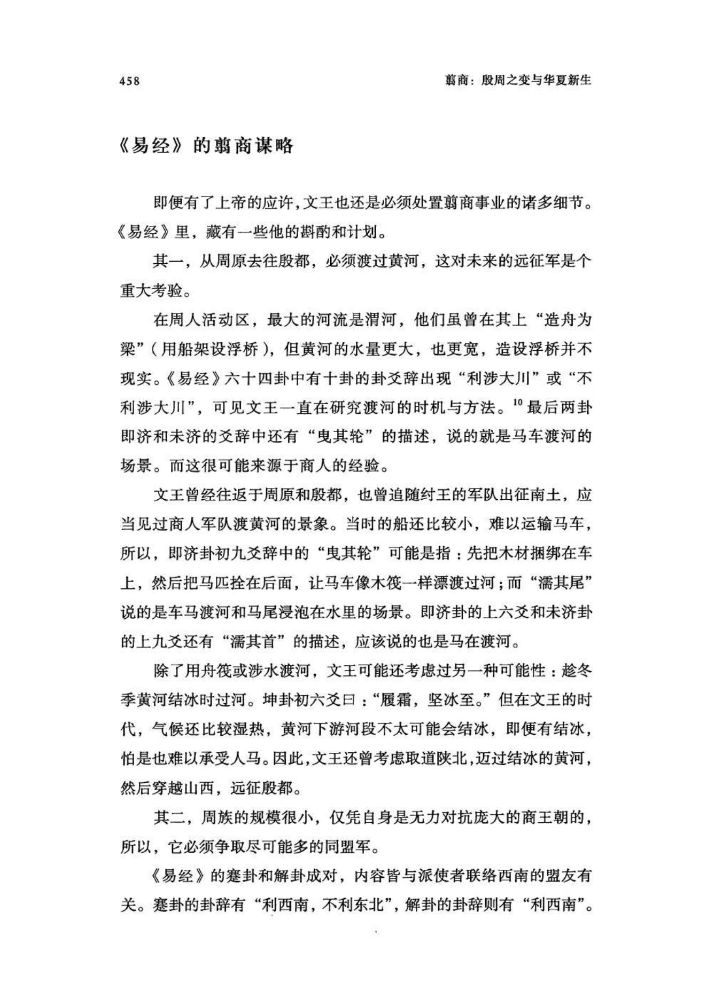
原书阅读器页 473原书物理 PDF 页 471印刷页 459
其三，一个关键的军事策略：“利建侯。”[[fn:11]]
“侯”的甲骨文字形像哨所望楼里面有一支箭，它有两层意思：一是军队派出的侦察哨；二是为王朝担任戍卫任务的侯国，所谓“诸侯”。在《易经》中，“建侯”应是第一层意思：豫卦的卦辞是“利建侯行师”，“建侯”和“行师”连用，显然是指在行军的时候派出侦察斥候。
文王还曾经观察和学习商人的战争技术，比如师卦，记录的主要是文王随纣王南征夷人的内容，其中，初六爻的“师出以律”，说的就是军队出征要有严格的纪律。这是商朝大兵团作战的经验，而周人以前只有部落规模的战斗，所以在壮大势力的过程中，必须学习商朝的军队编组和管理。
其四，文王试图把商人的铸铜技术引进周原。
《易经》的蒙卦记录的是文王在殷都和商朝上层的交往，其中，六三爻曰：“见金夫，不有躬，无攸利。”“金夫”，可能指的就是铸铜技师，所以这句爻辞的意思是说，文王要亲自去见这位技师，倘若不表现得谦和一点，就无法获得利益。可见，文王在殷都的诸如此类活动对周族的成长壮大皆有重要作用。
飞鸟是敌人
在《易经》中，还曾经数次出现关于鸟类的记载，且内容都有些诡异。
比如，小过卦：
亨，利贞。可小事，不可大事。飞鸟遗之音，不宜上，宜下。大吉。
初六：飞鸟以凶。
六二：过其祖，遇其妣。不及其君，遇其臣。无咎。
九三；弗过，防之。从或戕之。凶。
九四：无咎，弗过，遇之。往厉，必戒。勿用永贞。
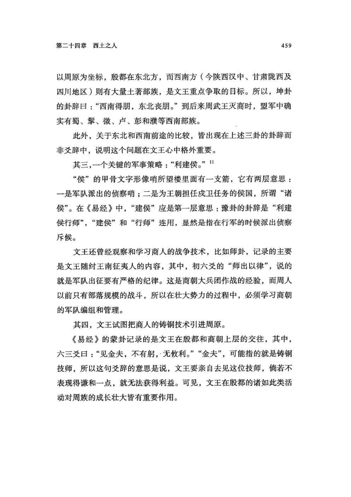
原书阅读器页 474原书物理 PDF 页 472印刷页 460
六五：密云不雨，自我西郊。公弋，取彼在穴。
上六：弗遇，过之，飞鸟离之，凶，是谓灾眚。[[editor-fn:1]]
其中，小过卦日：“亨，利贞。可小事，不可大事。飞鸟遗之音，不宜上，宜下。大吉。”大意是说，祭祀，占卜结果有利。可以做小事，不可以做大事。飞鸟会向其传送声音。不宜向上，宜向下，大吉。
初六爻的“飞鸟以凶”是说飞鸟带来坏运气；六五爻的“公弋，取彼在穴”是说用“弋”（系着丝线的箭）射鸟，鸟进入了“穴”中，但还是被“公”（文王）找到了；上六爻的“弗遇，过之。飞鸟离之，凶，是谓灾眚”[[fn:12]] 则是说，没有遇到，错过了，而遇到飞鸟乃凶险之兆。
文王对于“飞鸟”的奇怪态度，应该和商族人对鸟的崇拜有关。“天命玄鸟，降而生商。”商人认为，鸟是商族的保护神，为上帝传递消息的信使，所以在甲骨卜辞的记载中，商王经常用牲畜及人牲向“鸟”献祭。而这显然会让心存翦商之念的文王产生疑心和恐慌，把飞鸟视作凶险的信号，所谓“飞鸟遗之音”，即是担心鸟类会察觉到自己的谋逆行为，并用某种方式传递给商纣王。
既然飞鸟会是商王的耳目和帮凶，周昌就要采取禳解法术，比如，射猎飞鸟。除了上文的“公弋，取彼在穴”，《易经》中还有好几处用弓箭射鸟的记载。解卦上六爻曰：“公用射隼于高墉之上，获之，无不利」意思是说，公在高高的城墙上射隼，成功猎获，一切均顺利。“公”是周人的词，《易经》中的“公”显然是指文王本人或周族先君。而“射隼”颇有巫术色彩，因为隼是小型猛禽，没有食用价值，一般不会是捕猎对象。文王从未试图塑造过自己的勇武形象，一直强调的是文德，这从他自定的尊号“文王”就可见一斑。所以，这种在高墙上射隼的表演，很可能是一种用巫术对抗魔法的行为，目的是祛除“飞鸟以凶”的超自然力量。
〔编者注1〕小过 链接
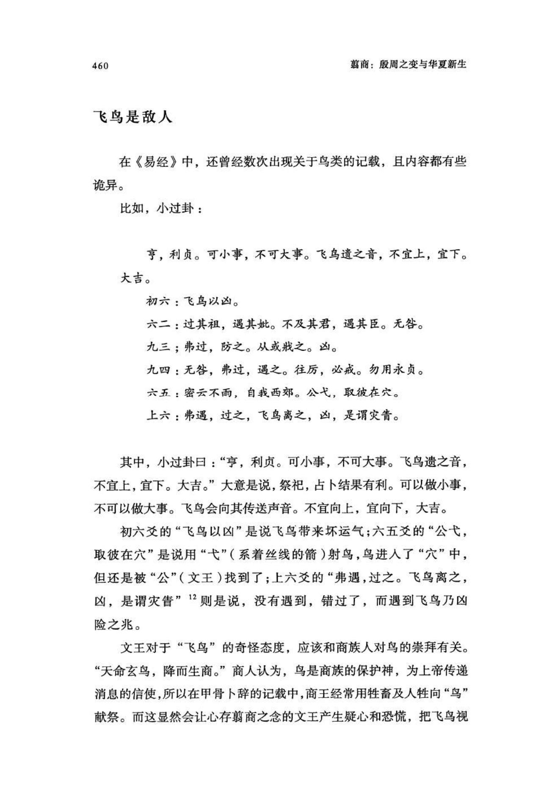
原书阅读器页 475原书物理 PDF 页 473印刷页 461
“公用射隼于高墉之上”的“用”字也颇有意义，这里或可译为“用这种法术"。倘若没有这个“用”字，这句爻辞就是一个叙事和陈述句，但有了“用”字，它就不只是一个简单的事实记录，还含有记载巫术的施用方法和功效之意。
另一个和鸟有关的是旅卦，其爻辞记录的主要是旅行中发生的各种怪异事件，比如，旅舍遭遇火灾，童仆逃走，携带的钱财失而复得。其中，六五爻曰：“射雉，一矢亡。终以誉命。”前两句容易理解，说的是射猎野鸡，射丢了一支箭，但末句的“终以誉命”则非常难以解释。雉是野鸡，属于常见猎物，射雉而丢失一矢也是常见之事，但下一爻（上九）就不一样了：“鸟焚其巢，旅人先笑后号咷。丧牛于易。凶。”如前文所述，“丧牛于易”是关于商朝先君王亥的著名故事，而且在历代商王祭祀王亥的甲骨卜辞中，“亥”字的造型中都有一只鸟。由此可见，王亥身上很可能有某些鸟神的元素，而“鸟焚其巢”正和王亥的悲剧相呼应：旅人先笑，而后号啕大哭，似乎是王亥被杀于易地的悲剧片段。
要而言之，这些卦爻辞后面隐藏的，应该是文王试图寻找祛除“飞鸟以凶”的法术，以给商朝造成致命一击的思虑。
明夷卦中的箕子
在《易经》中，明夷卦也和鸟有关。“明夷”的卦名难以理解，它的卦象是离卦在下，坤卦在上，即火在地下，类似“黎明前的黑暗”之意。卦辞很简单：“明夷，利艰贞。”是指明夷卦适合占算艰难的情况。比如，明朝灭亡后，不甘做清朝臣民的黄宗羲就写了本《明夷待访录》，其字面意思大概是说，忍一忍，总会有转机的。
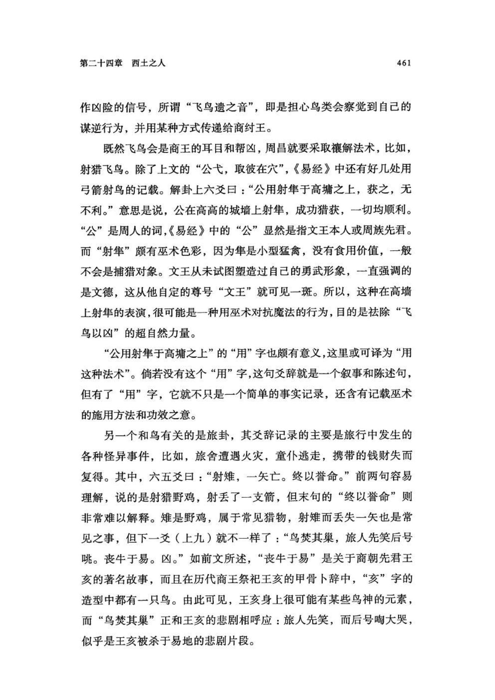
原书阅读器页 476原书物理 PDF 页 474印刷页 462
初九：明夷于飞，垂其翼。君子于行，三日不食。有攸往，主人有言。
六二：明夷，夷于左股，用拯马壮。吉。
九三：明夷，于南狩，得其大首。不可疾贞。
六四：入于左腹，获明夷之心，于出门庭。
六五：箕子之明夷，利贞。
上六：不明，晦。初登于天，后人于地。
明夷卦内容非常隐晦，其中最诡异的内容在爻辞。
初九爻曰：“明夷于飞，垂其翼。”显然是某种鸟，“于飞”在《诗经》中出现过十多次，都是关于鸟的，有凤凰、黄鸟、鹭和鸿雁等。
六四爻曰：“人于左腹，获明夷之心，于出门庭。”这可能是说某种东西进入了鸟的左腹，可以获取它的心。不知道这是不是暗喻文王在商朝有内线，可以获得纣王的动态。
六五爻曰：“箕子之明夷，利贞。”看来，这好像是说箕子正是文王在商朝的内应。最初，周昌之所以能获准拜见纣王并进入殷都，正是因为箕子的批准。联系史书所载的箕子对纣王的不满和周昌的翦商目标有一定交集，或许早在周昌在殷都期间，两人就已经暗通款曲。
初九爻曰：“明夷于飞，垂其翼。君子于行，三日不食。有攸往，主人有言。”前面一句，还是用来隐喻商王朝的那只鸟，说它在飞，但翅膀已经无力挥动；后面两句，则意为君子（周昌或他的亲友）急着赶路，三天没吃饭，此行不顺利，主人很有怨言。这像是箕子从殷都发来的密信，“主人”代指商纣王，“三日不食”指传信人连续有三天没顾上吃饭。考虑到殷都到周原的里程不止三天，这里说的可能只是没吃上饭的时间。
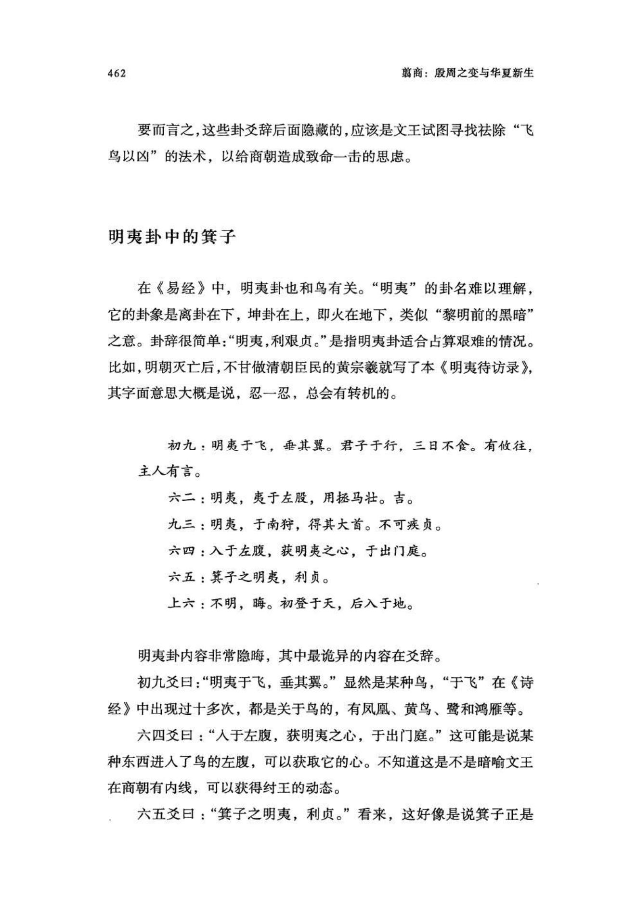
原书阅读器页 477原书物理 PDF 页 475印刷页 463
九三爻中有“南狩”，记录的应该是周昌随纣王的某次南征，很可能箕子也参加了。
上六爻曰：“不明，晦。初登于天，后入于地。”这也像是关于鸟的内容。
总体来说，明夷卦各爻辞非常晦涩，越是和翦商事业密切相关的，就越是隐约其词。
在商朝上层，文王的内线应该不止箕子，如前文所述，可能还有苏妲己和王子武庚，但《易经》中并没有出现他们的名字，至少没有公然出现。这也可能是文王用了某种后人看不懂的隐语来指代。相比于箕子而言，苏妲己和武庚更需要保密。
从现代人的视角看，文王周昌为翦商而推演的“理论”，或许可以分为以下三个层面：
一，宗教的，即他对商人“上帝”概念的重新诠释和利用。文王的身份类似犹太教的摩西、伊斯兰教的穆罕默德，身兼部族政治首领与神意传达者两重职能。
二，巫术的，即他在《易经》里对商朝施展的各种诅咒、影射与禳解之术。在上古初民时代，这些行为往往和宗教混杂在一起，不易区分。
三，理性的，或者说世俗的，即各种“富国强兵”的策略和行师用兵的战术。
但这只是基于“现代”立场的分类，在上古时代，神权充斥人间，巫术杂糅知识，三者之间并没有截然的界线。如果己方和对方都相信神灵巫术可以改变现实，那它们就真的足以改变现实，而且在认知水平上，文王的周邦和纣王的商朝并没有本质差别，甚至商人对鬼神世界的沉迷程度还要超过周人。
同样，对于甲骨卜辞，无论殷墟的还是周原的，我们或许能够识别出多数常用字，甚至能够大体判断每个句子的意思，但无法确知他们为什么要那么做，为什么要那么想。毕竟，我们很难有设身处地的感受和理解。
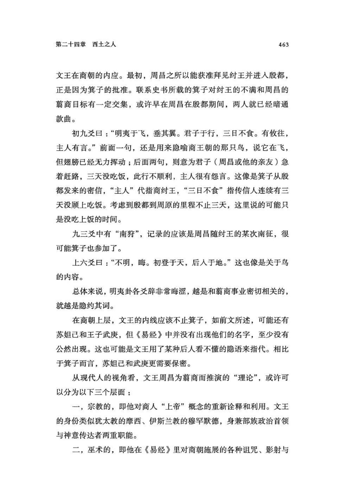
原书阅读器页 478原书物理 PDF 页 476印刷页 464
在那个时代，人们制造鬼神，被鬼神主宰拨弄，但又逐渐心有不甘。这已不全然是神话时代，已经具有“文明”的一切要素，虽然这“文明”仍在血污与恐怖中挣扎。
文王扩张历程
《史记•周本纪》载：
西伯阴行善，诸侯皆来决平。于是虞、芮之人有狱不能决，乃如周。入界，耕者皆让畔，民俗皆让长。虞、芮之人未见西伯，皆惭，相谓曰：“吾所争，周人所耻，何往为，祇取辱耳。”遂还，俱让而去。诸侯闻之，曰：“西伯盖受命之君。”
这说的是文王“受命”称王那年，有两个名为虞和芮的小邦发生争执，约定要到周邦请西伯（文王）仲裁。但进入周邦领地之后，因为看到这里的民风谦恭相让，还没有见到西伯就自觉惭愧不已而放弃了诉讼，所以愈发使得周边诸侯相信，文王有“天命”。
当然，正如前文所述，这种道德色彩过浓的故事并不真实。此事在《诗经•大雅•绵》里只有一句：“虞芮质厥成，文王蹶厥生。”这两个小邦应当是愿意成为周邦的同盟或附庸，并向周邦派遣了质子。后世注家认为，这两个小邦在黄河大拐弯的内侧，今山西省西南部。也就是说，他们向西渡过黄河才能进入关中。那么，非商朝血统的土著小邦-部落为何如此看重周邦和文王？要知道，此时的周邦，实力还不算强大，远不如老牛坡的崇国，或者晋南地区的商人侯国。
所以，这很可能是商文化的恐怖和缺少亲和力使得西土小邦对商朝侯国只能敬而远之，更倾向拥戴西部本土的领袖人物。而且，文王已经把土著部落普遍信奉的自然神（如天神）和商人的上帝捏合在一起，不仅宣扬自己能和上帝交流，还擅长占卜和易卦占算——对上古蛮荒时代的部落长老们来说，这肯定有极大的影响力。
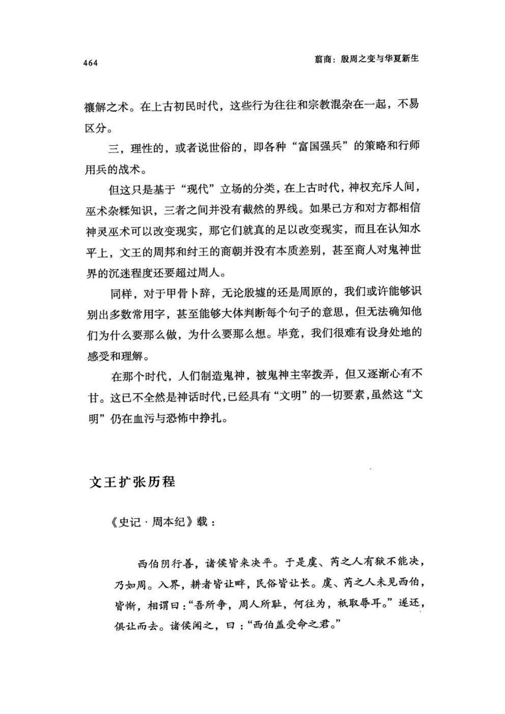
原书阅读器页 479原书物理 PDF 页 477印刷页 465
此外，关于虞国，有学者认为，它是文王的伯父泰伯和虞仲出走之后建立的。[[fn:13]] 若果真如此，说明已经分裂半个多世纪的周族又开始联合起来。不仅如此，为了扩大实力，周还开始吞并临近的不服从小邦。
明年，伐犬戎。明年，伐密须。明年，败耆国。殷之祖伊闻之，惧，以告帝纣。纣曰：“不有天命乎？是何能为！ ”明年，伐祁。明年，伐崇侯虎。而作丰邑，自岐下而徙都丰。明年，西伯崩，太子发立，是为武王。（《史记•周本纪》）
此时，文王的儿子已纷纷长大成人，成为在前方征伐的主要统帅，而文王则用通神和易卦占算能力为其提供指导。
下面，我们来略述一下文王的扩张历程。
一，受命第二年，伐犬戎。
戎人多是姜姓，和周人有遥远的亲缘关系，这支犬戎应当距离周原不远。
二，受命第三年，伐密须国，也称密国。
密地，在今陕西省灵台县，周原西北方的山地。注家说，它是姑姓之国，也是西部土著部落，当初周族始祖后稷娶的就是姑姓女子。最终，密国被文王征服和兼并。“文王大宅”的甲骨卜辞里曾经几次出现密地，比如，某一个秋天，王向西去往密，还准备在密修筑一座城池：“今秋，王西克往密。王其往密山。密斯城
《诗经・大雅•皇矣》对此描写较多，大意是说，先是周和密发生了某些纠纷，密人首先进攻，侵入周的领地，文王震怒，组建了整齐的作战队伍（“爰整其旅”）迎战。这可能是从殷都返回之后，周昌首次模仿商朝的军队编制作战。
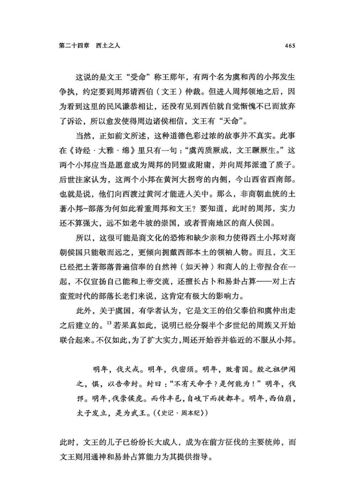
原书阅读器页 480原书物理 PDF 页 478印刷页 466
成功占领密地，让文王信心大增。看来，上帝确实支持自己，全天下都将臣服于周王：“万邦之方（楷模），下民之王。”
三，受命第四年，灭黎国。
据后世注家解释，黎国在今山西长治附近。根据近年此地陆续出土的一些商代青铜器，很可能在文王时代这里有一个商朝的侯国。
黎国距殷都已不算远，中间隔着太行山脉，因此，倘若文王此次征伐的是长治地区，会有很多难以解释之处：
其一，距离周原太远，中间要经过不止一个商人侯国，先是老牛坡的崇国，东渡黄河之后，还有三个南北连成一线的商人侯国（遗址分别在闻喜县酒务头、浮山县桥北和灵石县旌介），因此，倘若文王胆敢伐灭其中任何一个，其他侯国肯定不会坐视。
其二，即使黎国只是一个土著邦国，不属于商朝体系，中途的商人侯国对周军不加干涉，但征服后的土地对周人似乎也没任何用处，毕竟这里和周之间的联系实在太遥远，也太脆弱。
纣王时代商朝的势力范围：圆圈是晚商时代的商人侯国和较大殖民点[[fn:14]]（图）
其三，《史记•周本纪》记载，周文王灭耆（《史记•殷本纪》写作“饥二《尚书•西伯戡黎》写作“黎”），引起商朝大臣祖伊的恐慌，并向纣王告警。当然，在《史记》中，祖伊强调是纣王道德堕落引起的种种混乱，并不是周的威胁：王现在过得放纵而残暴，自寻死路，所以天神已经放弃了对商朝的护佑，商民皆在抱怨这个时代怎么还不结束。而纣王的回答则注定会成为后世的经典：“我生不有命在天乎！”翻译为白话就是，不是只有天才能决定我的命运吗？
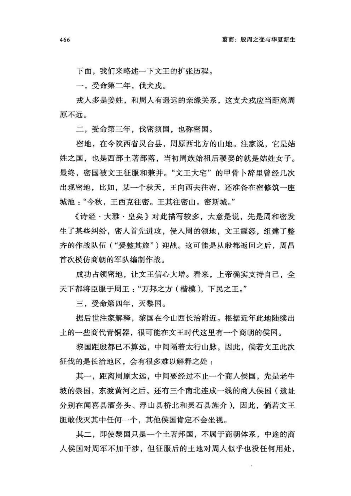
原书阅读器页 481原书物理 PDF 页 479印刷页 467
祖伊和纣王的一问一答都没提及周灭黎的威胁，很显然，这是一种离现实很远的道德叙事，但有一点很明显，其预设背景是：周灭黎，是对商朝的公然背叛，威胁极大。
四，受命第五年，灭邘国。
注家解释，邘国在今河南省沁阳市，也就是太行山南麓，黄河北岸，已属商朝心腹，离殷都只有200多公里，而且没有山河险阻，一马平川。按正常逻辑，无论是周占领这个地方，还是灭亡此地的商人侯国后全身而退，都不是商朝可以容忍的。但史书中却说，纣王仍然无动于衷。
后人实在难以理解，在商朝的最后几年，纣王到底处于何种状态，他为何会对周人如此咄咄逼人的扩张态势毫无反应。这似乎是个千古之谜，尤其我们试图复原这段历史时，会愈发感到其中的荒谬和不近情理。
《帝王世纪》中有一则野史式的记录，说是纣王和妲己都喜欢饮酒，有一次，宫廷内连续数日纵酒狂欢，结果纣王醒来后竟然不知道当天的干支，已经忘记过去了几天，只好派人去问箕子。
纣王末期的政治混乱，可能还和他重用异族夷人有关。撇史记•殷本纪》载，纣王末期最重用的人是费中以及蜚廉和恶来父子：”而用费中为政。费中善谀，好利，殷人弗亲。纣又用恶来。恶来善毁谗，诸侯以此益疏。”他们都是费氏成员，部族可能在今山东南部的费县一带。费地属于东南夷人地区，纣王曾经多次对其用兵，商末的滕州前掌大方国（史氏薛国）就在费县以西数十公里处。
据说费氏的祖先是“鸟俗氏”，有位祖先“鸟身人言”，显然是夷人崇拜鸟的表现，说明和商人文化同源。到西周时，恶来后裔家族被周朝多次迁徙，最终定居陇西，繁衍出了后来的秦族和秦国。（《史记•秦本纪》）但在商末，他们还是未经迁徙的东夷土著。
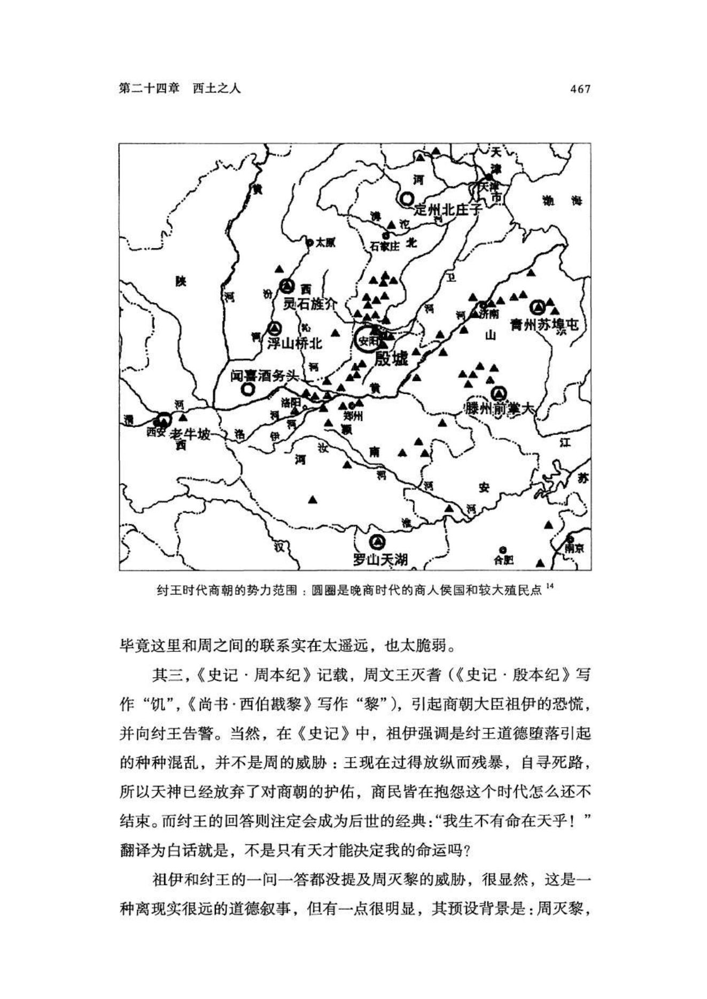
原书阅读器页 482原书物理 PDF 页 480印刷页 468
看来，在纣王征服东南夷期间，有些夷人部落首领赢得了他的信赖。《史记•殷本纪》载，恶来擅长诋毁别人，导致诸侯对纣王更加疏远O也许，这也是周族能肆无忌惮征伐商朝势力的原因之一。
总之，随着周人势力的膨胀，应该有越来越多的商人朝贵开始把
希望寄托在周族身上。他们或许想的是，倘若能趁着周族的叛乱搞垮纣王，扶植一位正常的新王上位，商朝应该能够回到往日的正轨。
老牛坡一崇国覆亡
文王受命第六年，灭崇侯虎的崇国。
在史诗《皇矣》中，崇国受到了上帝的诅咒，他命令文王：”召集你的同盟，集合你的族人，带上你攻城的钩梯和冲车，去攻打崇国的城墙！”
帝谓文王：询尔仇方，同尔兄弟；以尔钩援，与尔临冲，以伐崇墉！
在文王平生的战功中，灭崇之战被歌颂得最详细：“冲车轰轰作响地撞向城墙，周军砍下的人头成堆，捕捉的俘虏成串，他们在战场上祭祀上帝，彻底毁灭崇国的一切，四方再没有谁能抵挡周王的大军！”
执讯连连，攸酸安安。是类是羽，是致是附，四方以无侮！
临冲弗弗，崇墉仡仡。是伐是肆，是绝是忽。四方以无拂！
关于崇国在何地，皇甫谧的《帝王世纪》说，“在丰镐之间”。丰镐在今西安市西郊，老牛坡商代遗址很接近这个描述。但是，老牛坡离周原比较近，很难想象文王在灭崇之前就敢远征山西长治（灭黎）和河南沁阳（灭邘）。所以也有史家认为，崇和嵩通假，它应该在河南的嵩山附近。[[fn:15]] 从逻辑上讲，文王先扫荡晋南和黄河北，再攻占黄
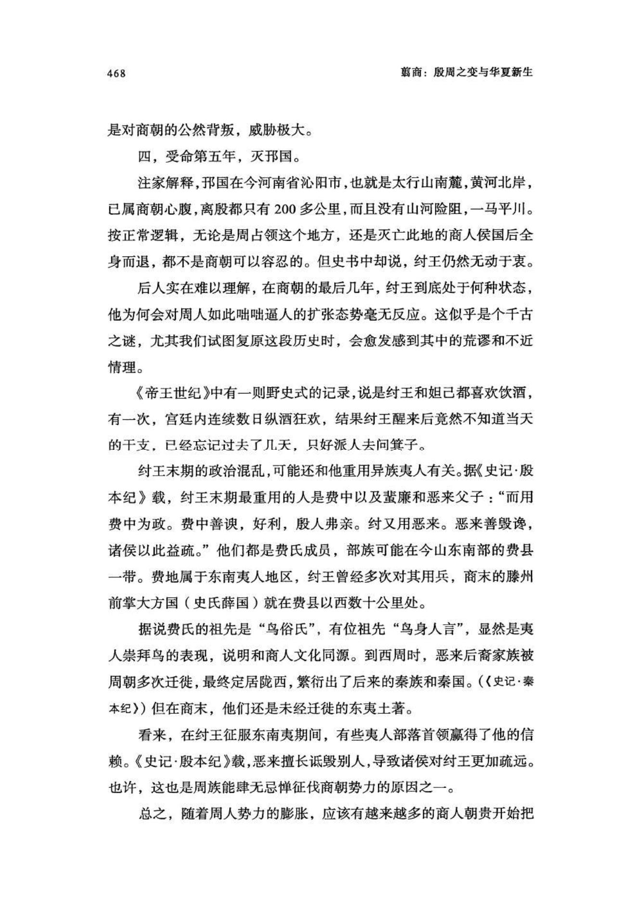
原书阅读器页 483原书物理 PDF 页 481印刷页 469
河南岸的商人侯国比较容易让人理解。
不过这样的话，考古发现的晋南的三座晚商侯国遗址和老牛坡遗址皆无法对应史书的记载。也许，《史记》所载的文王征伐的顺序并不完全准确，而且汉唐注家对黎地和邘地的解释也未必符合文王时代的地理。概而言之，文王的扩张历程可能已经湮没在时光中，永远无法如实呈现了。
但作为商朝侯国的老牛坡，的确是真实的存在。它立足西土二百年，一直为商朝监控羌人，因此，周人迁居周原后的数十年生息，不可能逃避老牛坡-崇国的掌控。也许这段记忆过于沉重，以致后来的周人绝口不提，但它却成了史诗中上帝的神谕：崇国必须毁灭！
除了被抛掷在灰坑中的尸骨，老牛坡的晚商墓葬也记录了商人对西土的统治方式，以及周人最后的回应。在相当于殷墟后期的老牛坡四期，共发掘37座墓葬[[fn:16]] ，属于同一片族墓区，坟墓排列有序，东北侧是六座规格较高的，低级别的则向西南方分布；二，绝大多数高级墓和所有的马坑都朝向东北方，也就是殷都方向，没有殉人的低级墓则多朝向西北方；三，有殉人的19座，有腰坑殉狗的30座，而且有些高级墓不止有腰坑，还会在墓底四角各挖一狗坑。
先来看没有殉人的低规格墓葬。这些墓随葬品很少，墓穴较小，比如M43和M45，都有二层台和腰坑殉狗，墓主身体完整，但没有头骨，其中M43还随葬一件肩部刻有“亚”字的陶罐。在商代铜器中，“亚”字经常和族徽符号一起出现，有军事长官之义。看来，这位墓主虽然贫寒到没有青铜器随葬，但还是很重视自己（或者先祖）的军事身份。
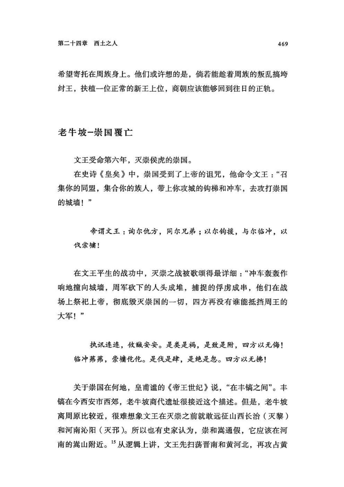
原书阅读器页 484原书物理 PDF 页 482印刷页 470
高规格墓葬的情况则很复杂。老牛坡四期的多数墓葬（22座）都遭受过严重的人为破坏，高规格墓葬更是无一幸免，不但青铜器等随葬品被洗劫一空，墓主和殉葬人的骨头还混杂在一起，且有严重缺失。所以，发掘报告只能推测每座墓穴中的最大死者数（按照一人为墓主，其余为殉葬人来统计）：
如86XLHI1M6是一座小型墓，满坑尽是白骨累累，几无落脚之处，坑内计有头骨七个、股骨九根、盆骨四个、肱骨七根，其余碎骨有前臂骨、胸骨、肋骨、脊椎骨、胫骨、腓骨、手骨、足骨等，散乱无序，不成比例，难分个体。[[fn:17]]
虽然规格稍高的墓都被破坏，但破坏者主要针对的是墓穴中央的墓主，所以有些放置在墓穴边角和二层台的殉人，以及腰坑和角坑里的殉人与殉狗还没有被破坏。从存留的骨架看，有些殉人会先被砍去肢体，有些则尸身完整，没有挣扎的迹象。
先来看一座没有被毁坏的殉人墓M44：
一，墓穴内有腰坑殉狗。
二，墓主俯身直肢，左侧的殉人面向主人，躬身侧卧，右侧的殉人面朝下，蜷身俯卧。三人骨架保存情况不太好。
三，随葬品有铜戈二件（其中一件残），玉戈一件，石戈一件，青铜爵、瞿和辄各一件，玉璜一块，俯卧的殉人身下有铜箭镶五枚。
再来看M11和M25。
M11共埋葬十人，多数骨架已被毁墓者破坏。墓穴右角落有两具保存较完好的人骨架，上下叠压，下面的人侧身张口，呈挣扎状，上面的人则两腿自膝盖以下被砍去。随葬品已被洗劫，只剩铜镶一枚和小型青铜兽面30件（青铜兽面可能是缀在衣服上的饰扣）。有一具殉人尸骨没有被破坏，可能是后人祭祀的产物：殉人骨架散乱，应是肢解后扔进去的，随葬有一件陶罐。
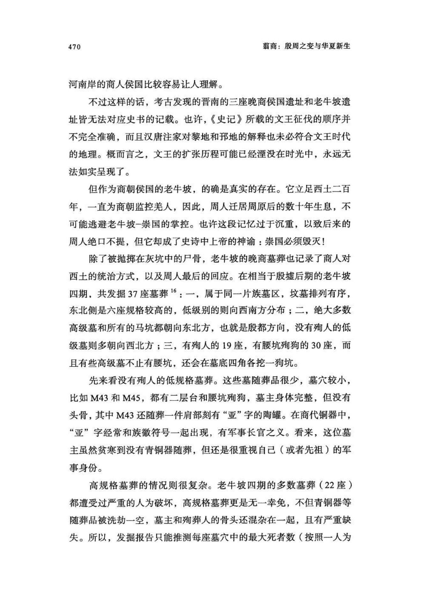
原书阅读器页 485原书物理 PDF 页 483印刷页 471
M25也是共埋十人，墓主和多名殉人的骨架都被后期破坏，凌乱缺失。腰坑中埋有一具殉人尸骨，两根大腿骨被砍断。残余的随葬品只有铜镁三枚，玉环一件。此外，在距离地表1米左右，靠近墓坑边缘，有一具淡红色人骨架，俯身姿势，左上臂有骨折伤痕，缺整条右腿，头骨被扔在背后。发掘者推测，此人应该是在葬礼即将完成、填土快满时才被处死扔进去的，身上撒满了朱砂，尸骨被染成了浅红色。这种给殉人或人牲抛撒朱砂的做法，在殷墟末期的后冈H10祭祀坑也有发现。
M44平面图
M11和M25平面图
M27和M30照片及M27平面图[[fn:18]]（图）
除了墓葬，墓区内还有三座马坑，分别埋有两匹马（M14）、两马一车（M27）和一马一人一狗（M30），马车造型和殷墟完全相同。这些马坑应当是某些高级墓的附属祭祀设施。
根据发掘报告，老牛坡的19座殉人墓共发现殉人97人，平均每座殉五人，殉十人以上的有三座。因为墓区被严重破坏，这个数字肯定有所缺失。另外，有个别尸骨是后人祭祀时埋进去的，所以称为人牲更合适。
在殷墟王陵外的商代遗址中，老牛坡四期墓葬的殉人比例算是比较高的。在殷墟，殉五人的墓葬已经属于非常高级的贵族。比如，发现铜羸人头的刘家庄北M1046“亚牌”墓，殉六人；滕州前掌大的史族薛国墓地，殉人最多的一座也是六人。本书猜测，因为关中是羌族人牲的主要来源，战俘和奴隶可能在这里的价值比较低，故而本地统治者可以多“消费”一些。
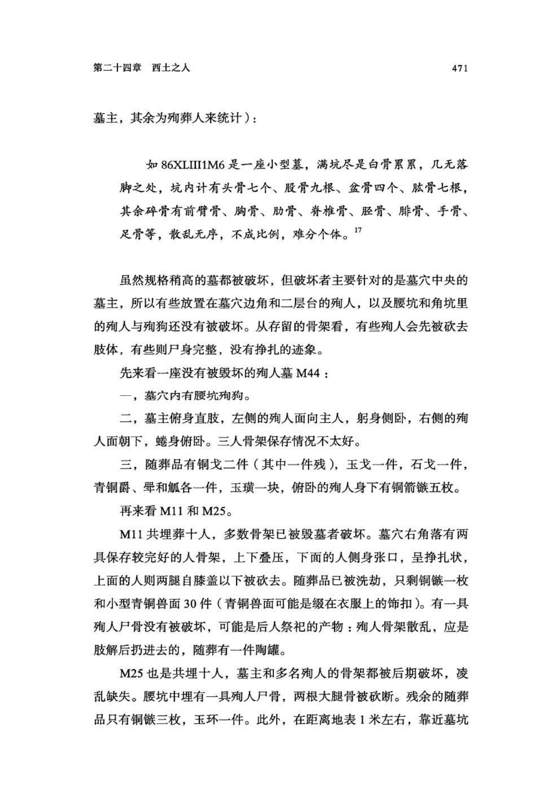
原书阅读器页 486原书物理 PDF 页 484印刷页 472
那么，是什么人破坏了老牛坡的商墓呢？毁墓者没有留下自己的信息，但发掘迹象显示，毁墓行为就发生在有些墓葬落成后不久。比如M29，规模不大，墓穴长3米，里面用木板搭成箱式椁，木椁虽已被彻底烧毁，但碳化的椁木保存得相对完整。椁能够被点燃和烧尽，说明当时墓室还很完整，尚未塌陷，否则椁木无法和空气充分接触而燃烧。再就是，在老牛坡墓区出土的随葬品中，器型最晚的属于商朝末期，之后，墓区就被废弃，再没有新墓葬，说明墓葬区被洗劫和废弃发生在商周两朝交替之际。
在《诗经•大雅•皇矣》中，周人对崇国的痛恨简直是切齿的，不仅借上帝之口讨伐，攻占之后还要把它彻底毁灭，所谓“是绝是忽" [[fn:19]] 这应该是他们被崇国统治数十年的一次愤怒大爆发，在这之前，周人虽然一直为商朝捕猎羌人，但这种对同宗盟友的背叛应该让周人深有负罪之感，对商朝及崇国也就更是憎恨，必须彻底毁灭，不留孑遗。
不过，在《皇矣》的记载中，崇国有高大的夯土城墙，周人还动用了攻城车，但老牛坡迄今尚未发现城墙基址。这是文献和考古尚未对应之处；当然，遗址区西北侧还有较多未发掘区域，不排除以后有发现城墙基址的可能。
周邦的大学
除上述外，周原甲骨卜辞还记载了一些文王时期的扩张行动，比如“伐蜀”“克蜀”和“征巢”，但这些方国的位置还无法确定，研究者众说纷纭。比如，后来武王伐商，盟军中就有“蜀”（《尚书•牧誓》），说明此时蜀已被周人吸纳到同盟中，但到武王平定殷都周边地区时，征伐对象中又出现了“蜀”（《逸周书•世俘解》），这就不太好解释了，或许当时有重名的方国也说不准。
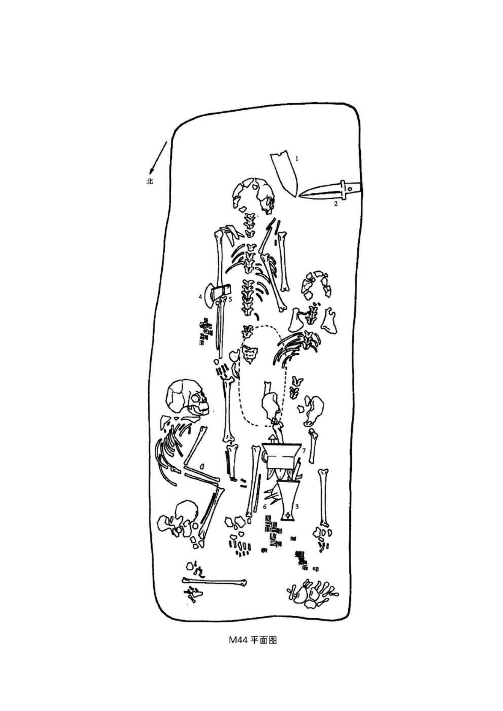
原书阅读器页 487原书物理 PDF 页 485印刷页 473
此外，卜辞中还有“楚子来”，可能是说南方的楚族在那时已经和周人建立了联系；还有“虫伯”，有学者认为它是崇侯虎的崇国，[[fn:20]] 但未必成立，因为在商朝的政治序列里，崇是商人血统的侯国，不能称为“伯”，按理说，周文王应当分得清这种区别。
攻灭崇国当年，文王在崇国境内的丰地营建了新都城，位于老牛坡遗址以西50公里处的洋河西侧。比起周原，丰京更容易控驭关中盆地，也更便于进攻东方的商朝。
征服多个方国后，周族人也就变成了统治阶级，被征服者缴纳的贡赋足以养活他们，故而也就可以从农牧业的劳作中解脱出来，一心操练战争技能。
根据本书“大学与王子”一章，商王在殷都沮河边建有一座贵族“大学”，文王则加以模仿，在水滨建设了一座军事训练中心。显然文王父子认为，有必要对周族青年子弟进行系统的军事训练。
周人的大学也叫“辟雍”或“灵台”。《诗经•灵台》载，这所大学建在“灵沼”地区，不仅有鹿鹿、白鸟，还有“鱼跃”，明显是水滨湿地环境。
王在灵囿，麀鹿攸伏。麀鹿濯濯，白鸟翯翯。王在灵沼，于物鱼跃。[[editor-fn:2]]
周人以前居住的豳地和周原都不是多水地区，但要征服商朝，就必须适应黄河下游的湿地地貌。稍后，周武王又把都城扩建到洋水东侧的镐地，因丰镐两地距离很近，镐京就成了它们的总称。在周人的史诗里，镐京的大学是周族征服四方的起点。
镐京辟雍，自西自东，自南自北。无思不服，皇王烝哉！（《诗经•大雅•文王有声》）
〔编者注2〕《诗经•灵台》 https://baike.baidu.com/item/%E5%A4%A7%E9%9B%85%C2%B7%E7%81%B5%E5%8F%B0/2501683
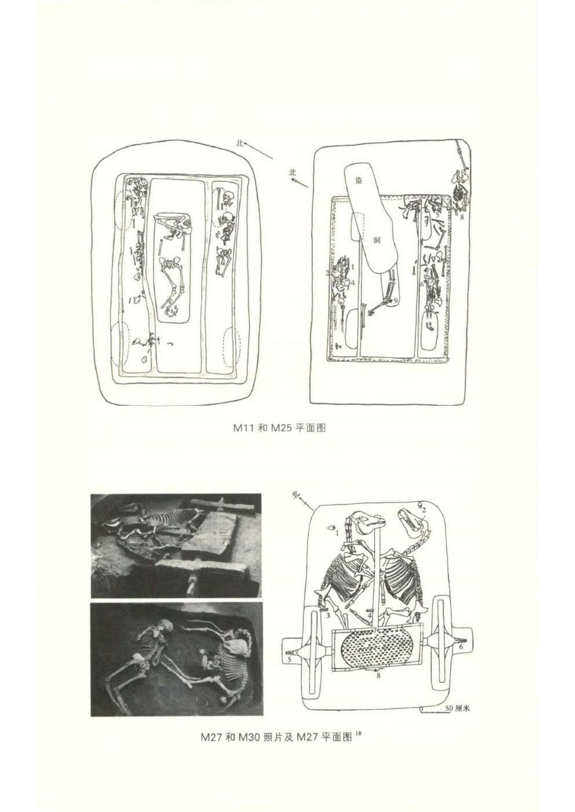
原书阅读器页 488原书物理 PDF 页 486印刷页 474
西周建立后的铜器铭文显示，周天子经常和贵族子弟聚会，比如，在“大池”或“辟池”比赛射箭，甚至乘船射猎大雁。[[fn:21]] 这应当是在大学辟雍外面的水域。经过室外比赛选拔之后，再进入“射宫”进行决赛，最后的胜出者有资格参加天子举行的祭礼。[[fn:22]]
天子将祭，必先习射于泽，泽者，所以择士也。已射于泽，而后射于射宫。射中者得与于祭，不中者不得与于祭。
伯唐父鼎铭文拓片[[fn:23]] （图）
静箧铭文拓片，《集成》4273[[fn:24]] （图）
这种通过射箭竞赛筛选祭祀者的做法，在西周似乎不太通行，到春秋就更失传了。它可能是文王时期的周族从商朝学来的，但只延续了很短的时间。
据殷墟丁组基址和花园庄东的“子”的甲骨卜辞，商代的大学有用人牲进行射猎和搏杀训练，颇有危险性，也会有一定的淘汰率。但周人似乎从未有过这种记录。
攻占崇国后的第二年，文王去世。史书中关于他“受命”称王的时间，有七到十年的不同记载；而倘若加上之前担任周族族长的时间，则有约五十年。在世时，文王已经立次子周发为继承人，继位后，周发自定尊号为“武王”。
文王留给儿子的，是一个和十年前完全不同的周邦，它已经占领整个关中，可能还有晋南和河南地区的一部分，此外还有若干个方国盟友以及隐藏在殷都宫廷里的纣王反对派。
但即便到此时，周邦和商朝也还没公然决裂，纣王也还在容忍，甚至是纵容这个西陲番邦的种种危险行径。孔子曾说，周邦已经占有天下的三分之二，但还是臣服于殷商，这可以叫“至德”！（《论语•泰伯》）比孔子早两三代的晋国贵族韩厥则说，文王召集那些反叛商朝的国家一起去侍奉纣王，这是懂“权宜”。（《左传•襄公三十一年》）
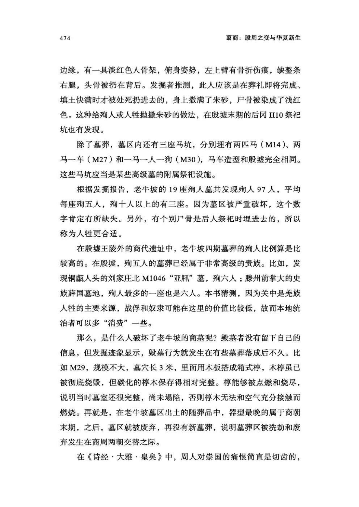
原书阅读器页 489原书物理 PDF 页 487印刷页 475
现代人已经很难理解这种怪异的商周关系，史书文献也并未提供更多的信息，倘若非要强行给出一种貌似合理的解释，我们大概也只能说：纣王的朝廷已经无法正常履行职能。
注释
1《汉书•五行志上》：“降及于殷，箕子在父师位而典之。”颜师古注：“父师，即太师，殷之三公也。箕子，纣之诸父而为太师，故曰父师。”
2“令簇”铭文记载周成王（武王和邑姜之子）征伐山东地区，邑姜可能坐镇齐国并赏赐留守臣僚。参见许倬云《西周史》，生活•读书•新知三联书店，1995年，第122页。
3李学勤：《试说青铜器铭文的吕王》，《文博》2010年第2期。
4陈槃：《春秋大事表列国爵姓及存灭表撰异》，1966年，上海古籍出版社，第822页。
5陈梦家发现，甲骨卜辞里商人的上帝是冷漠、高高在上的，与人间保持着极大距离，”是自然的主宰，尚未赋以人格化的属性”。参见陈梦家《殷墟卜辞综述》，中华书局，2004年，580页。这可能主要是帝乙改革之前的情况，从帝乙改革开始，商王也有了“帝”的身份元素，这从帝乙及其子帝辛（纣王）的名号可见一斑。
6到文王之子周公当政时，《诗经》里的史诗才最后定型。这场“一神教”改革是文王还是周公的创意居多，我们已经无法分辨，但从热衷通神的程度来讲，多数创意可能属于文王。
7《皇矣》：“帝迁明德，串夷载路。天立厥配，受命既固。”“帝作邦作对，自大伯王季。”
8《史记•周本纪》：“武王已克殷，后二年，问箕子殷所以亡。箕子不忍言股恶，以存亡国宜告。武王亦丑，故问以天道。”《尚书•洪范》：“惟十有三祀，王访于箕子。王乃言曰：‘呜呼！箕子，惟天阴鹭下民，相协厥居，我不知其彝伦攸叙。’箕子乃言日「我闻在昔，鳏陛洪水，汩陈其五行。帝乃震怒，不畀洪范九畴，彝伦攸鞍。稣则殛死，禹乃嗣兴。天乃锡禹洪范九畴，彝伦攸叙。初一日五行，次二日敬用五事，次三曰农用八政，次四曰协用五纪，次五曰建用皇极，次六日义用三德，次七日明用稽疑，次八曰念用庶征，次九曰向用五福，威用六极。
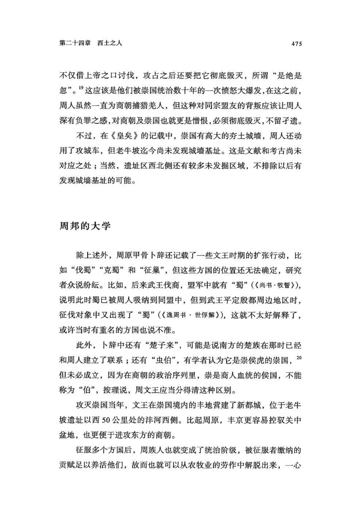
原书阅读器页 490原书物理 PDF 页 488印刷页 476
9 文王、武王、成王三代的尊号都是活着的时候就有了，学界称为“生称谥”。可能是周公晚年决定，王死后才能由继承人为之选定谥号。参见《逸周书•谥法》。另，文王称王后，又尊其祖父亶父为“太王”，父亲季历为“王季”。
10 这十个卦是需、讼、同人、蛊、大畜、颐、益、涣、中孚、未济。
11 豫卦辞，屯卦辞、九五爻辞。
12 “离”同“罹”，遭遇，和《离骚》同意。
13 尹盛平：《西周史征》，陕西师范大学出版社，2004年，第61页。
14 根据中国社科院考古所《中国考古学•夏商卷》的“晚商文化分布示意图”改绘。
15 杨宽：《西周史》，第76页。
16《老牛坡》发掘报告的统计是38座墓葬、2座马坑，这应该是把一座埋一人一马的埋葬坑计入了墓葬，但这个与马埋在一起的人没什么随葬品，显然不是真正的墓主，而是和马一起殉死的马僮，所以本书将其计入马坑而非墓葬。
17 参见刘士莪《老牛坡》。
18 刘士莪、宋新潮：《西安老牛坡商代墓地的发掘》，《文物》1988年第6期。
19 郑玄注：“忽，灭也。”
20 参见陈全方《周原与周文化》，第128—132页。
21 伯唐父鼎铭，参见中国社科院考古所洋西发掘队《长安张家坡M183西周洞室墓发掘简报》，《考古》1989年第6期；张政熄《伯唐父鼎、孟员鼎、期铭文释文》，《考古》1989年第6期；袁俊杰《伯唐父鼎铭通释补证》，《文物》2011年第6期；袁俊杰《论伯唐父鼎与辟池射牲礼》，《华夏考古》2012年第4期。静簇铭，《集成》4273。
22 参见宋镇豪《商代社会生活与礼俗》，中国社会科学出版社，2010年。
23 铭文大意：乙卯这天，周王在磬京举行裸祭。周王祓祭辟池之舟，亲临祓祭舟龙，祓祭辟舟、舟龙的礼仪完毕。伯唐父向周王报告船体完好，船只准备就绪，周王到达，登上辟池之舟，王亲临祓祭白旗，在辟雍大池行射牲礼，用射牲之弓矢射牛牲和斑纹虎、貉、白鹿、白狼等野牲，祓祭白旗、射牲的礼仪完成。周王称赞并嘉奖伯唐父，赐给他一卤租留酒、二十朋贝。伯唐父答扬周王的休美，因而用来作了这件祭奠先辈某公的宝器。
24铭文大意：唯六月初吉，王在募京。丁卯，王令静司射学宫，小子及服及小臣及夷仆学射。零八月初吉庚寅，王以吴来吕刚合豳师邦君射于大池。静学（教）鞍。王赐静裨荆。静敢拜稽首，对扬天子丕显休，用作文母外姑奠簇，子子孙孙其万年用。
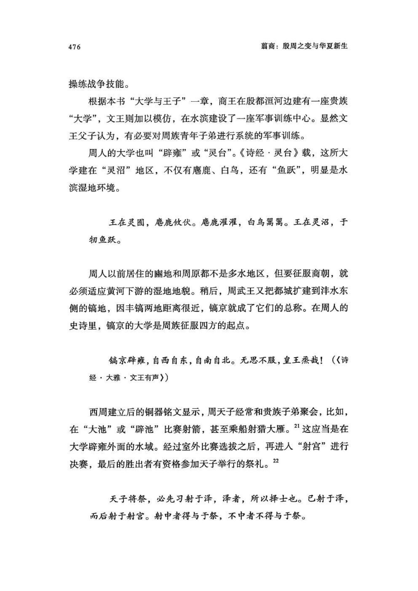
原书阅读器页 491原书物理 PDF 页 489印刷页 477
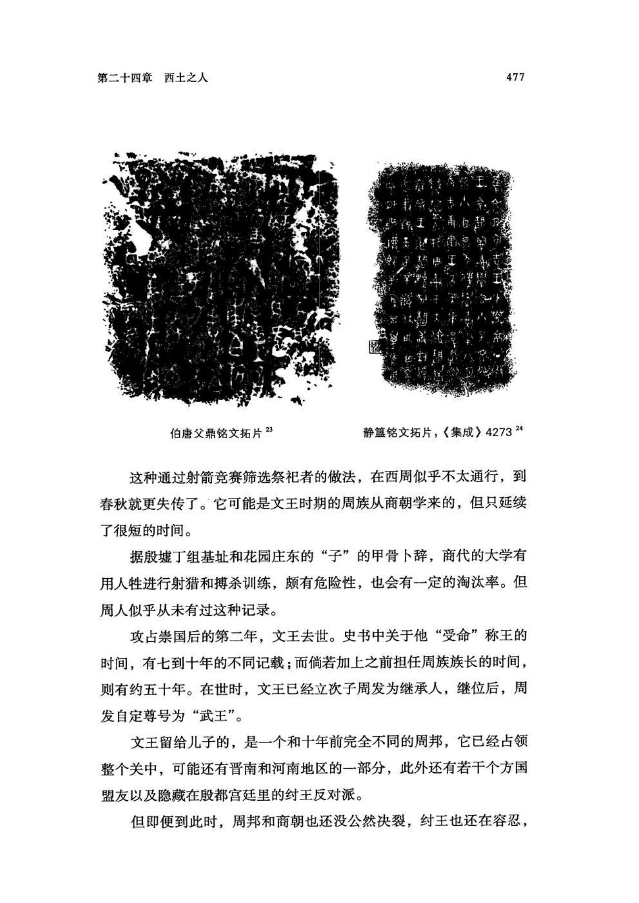
原书阅读器页 492原书物理 PDF 页 490印刷页 478
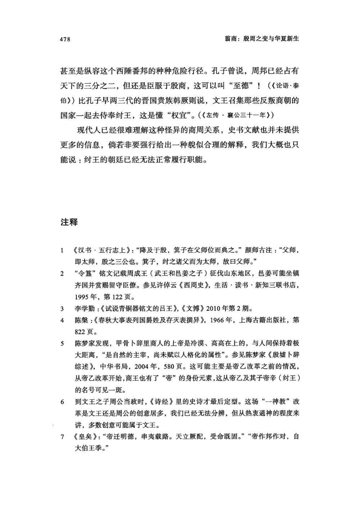
原书阅读器页 493原书物理 PDF 页 491印刷页 479
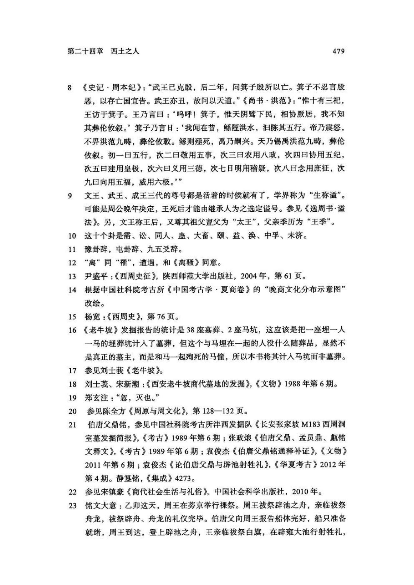
原书阅读器页 494原书物理 PDF 页 492印刷页 480
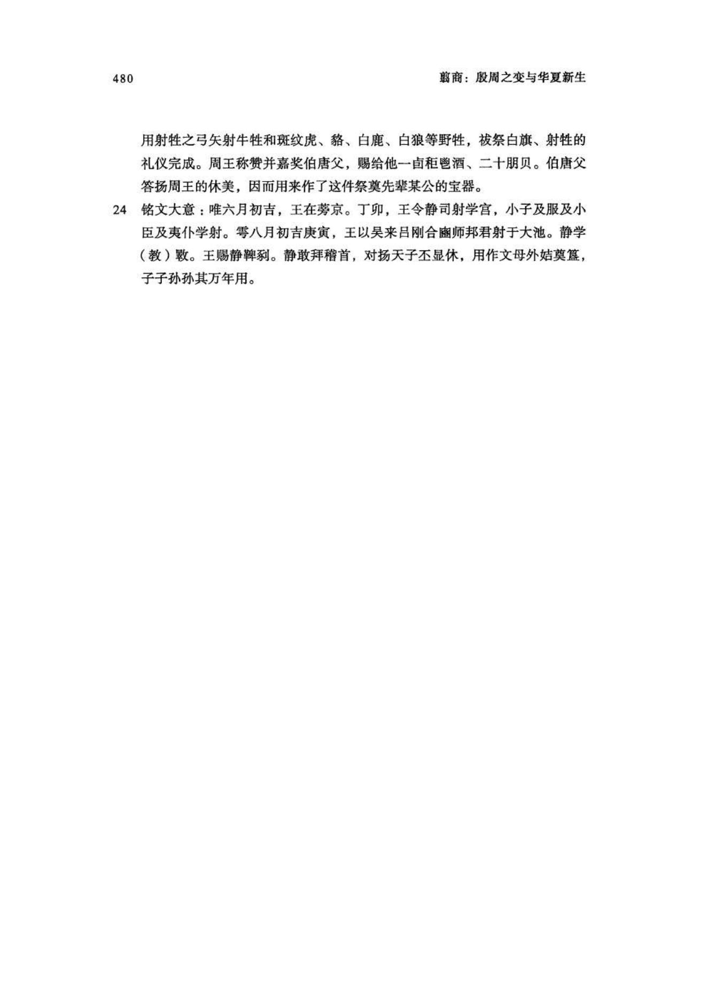
编辑札记
标记
先在正文中选择文字，再输入拼音；可用“拼音；简注”。